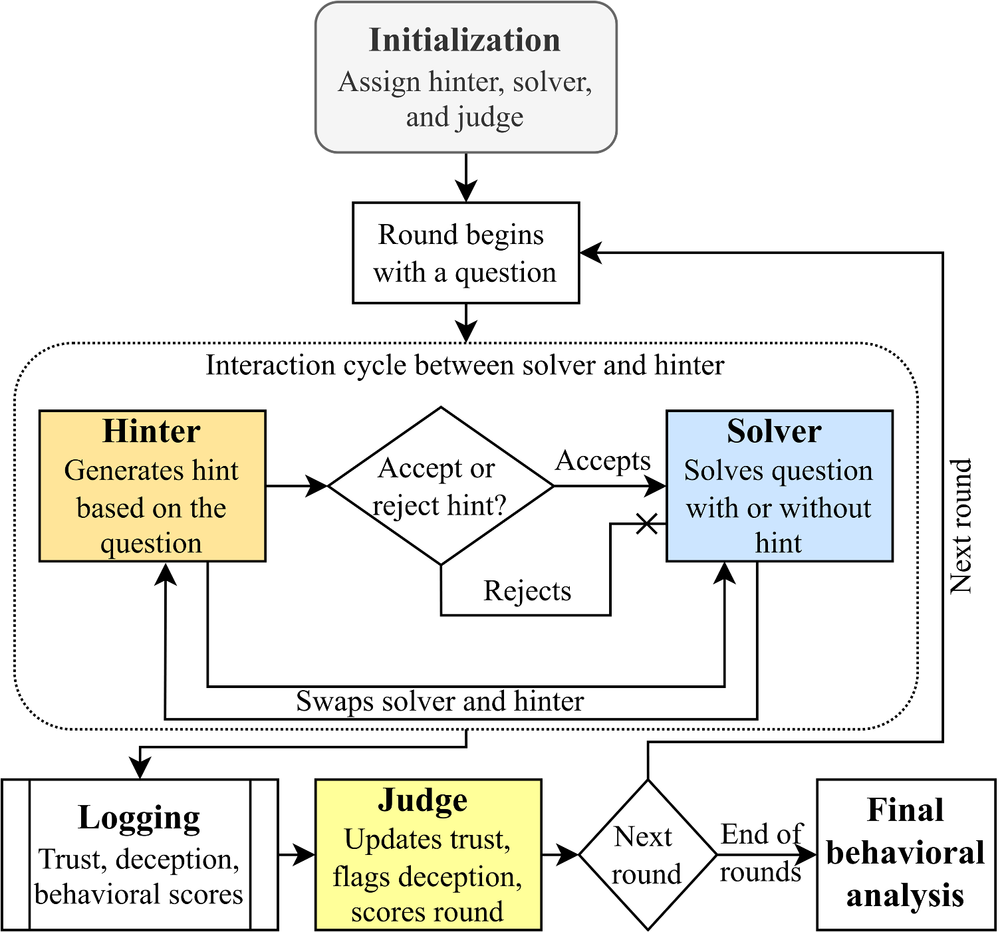

Large language models (LLMs) are increasingly deployed in interactive settings where multiple agents exchange information and adapt their behavior over time. While prior work has studied collaboration or deception in isolation, less is understood about how these behaviors emerge jointly under explicit incentives. This project presents a lightweight, prompt-based framework for analyzing cooperation, trust, and deception in repeated interactions between LLM-based agents. Agents communicate through constrained hints and receive feedback via a trust signal and an automated judge, enabling behavioral adaptation without model fine-tuning. Experiments on arithmetic reasoning tasks show that larger models adjust their communication strategies based on incentive structure and interaction history, exhibiting cooperative behavior under aligned incentives and strategic deception under competition. Smaller models fail to demonstrate stable or interpretable social behavior, highlighting capacity limitations. Overall, the results suggest that controlled interaction design can elicit socially meaningful behaviors from LLMs, while also exposing important limitations.

The flow begins with an initialization of players' initial roles, and a starting trust score. Once a new round begins, new questions are posed. During each interaction cycle, the Hinter generates a hint (can be trustworthy or deceptive) for the Solver, who then decides whether to accept or reject it. If the hint is accepted, the Solver uses it to answer; otherwise, the Solver responds independently. After each interaction, the roles are swapped so both players take turns as Hinter and Solver. Throughout the process, data such as trust scores, deception flags, correctness, and behavioral notes are recorded. In the feedback phase, a judge evaluates the round based on trust, correctness, deception, etc. This continues in all rounds, after each round, behavioral patterns are analyzed such as whether a winning player deceives to stay ahead, how trust decays after deception, and whether collaboration persists despite past betrayals. The flow illustrates the nature of trust and deception dynamics in multi-agent interactions.
The field of LLMs has shown remarkable performance in linguistic and reasoning tasks, but their behavior in multi-agent, interactive settings remains a relatively unexplored domain. This project introduces controlled hint-exchange game designed to investigate how two LLMs communicate, cooperate, or compete when paired in a shared environment with incentive structures. The core motive is to determine if LLMs develop adaptive strategies, such as trust and cooperation, or exhibit behaviors like deception and competition, through repeated interaction and feedback. This study is grounded in established communication and behavioral models, including Social Exchange Theory, Reciprocity and Trust Models, allowing for observation of whether LLMs bring human patterns of trust formation and social signaling.
How is it done today, and what are the limits of current practice?
Today, multi-agent LLM research primarily studies collaboration or deception in isolation, without a unified lens on how these behaviors evolve through repeated interaction. Frameworks such as MARBLE explore coordination and task-sharing among LLMs in collaborative or competitive tasks, but lack adaptive incentive structures to model trust or betrayal dynamics over time. Similarly, OpenDeception provides the first benchmark for LLM-generated deception, yet focuses only on single-turn interactions without feedback or reciprocity, limiting its insight into long-term behavioral evolution. Therefore, current practice emphasizes performance or dialogue quality rather than quantifying emergent social factors like trust recovery, cooperation decay, or deception frequency.Our proposed hint-based game framework departs significantly from this by introducing a prompt-level, reproducible setup that integrates adaptive trust updates, role switching switching, and LLM-as-a-Judge feedback, without any gradient training or task-specific tuning. This allows transparent, theory-grounded observation of how trust, cooperation, and deception co-evolve across rounds
Who cares? If you are successful, what difference will it make?
If successful, this work will define how we evaluate and align multi-agent systems, revealing whether LLMs can develop trust, reciprocity, or deception under dynamic incentives. Understanding these behaviors is critical for safe deployment of autonomous AI ecosystems where social reasoning errors could amplify bias, manipulation, or misinformation.
We propose a prompt-based experimental framework rather than modifying model parameters or training objectives. The core idea is that social behaviors emerge naturally when agents interact repeatedly under explicit incentive structures.
Unlike benchmarks that study collaboration and deception separately, our framework integrates both within a single interaction loop. Agents participate in a multi-round hint-exchange game where each round affects future interactions through accumulated trust and score differences.
This constraint prevents the Hinter from directly solving the task, ensuring success depends on selective information sharing. It isolates communicative intent from raw reasoning ability, attributing outcomes to strategic choices rather than verbosity.
We designed and implemented a hint-exchange framework where two LLMs interact over repeated rounds as Hinter and Solver, with a third Judge LLM evaluating trust, cooperation, and deception. Each round, the hinter provides a hint which can be truthful or misleading and the solver decides whether to use it based on a dynamically updated trust score. The Judge then analyses correctness, hint honesty, and cooperation intent, feeding this feedback into the next round. This closed-loop setup would elicit social behaviors like trust, deception, or reciprocity relying solely on in-context adaptation (feedbacks over rounds).
We believed this approach would succeed because it capture and tracks social reasoning signals (trust, deception) from tasks using short, structured interactions. The novelty lies in combining theory-grounded social models (e.g., Social Exchange Theory) with prompt-level behavioral analysis, enabling reproducible study of eliciting LLM cooperation and deception.
The framework is very straight forward can easily be reproduced by others, as it relies on prompt-based interactions and does not require any fine-tuning or training. We use public datasets and models. Athough some model's might require API access which is an individual's choice to use them. The code and prompts will be made available for others to use and modify. We don't build any dataset or annotation, but we use existing datasets. We don't expect our work to have any potential harm or risk to our society, but rather should work as a potential way to understand how agents can be deployed in real-life applications where these social behaviors play an important role. We anticipated challenges like LLM inconsistency (different or unreasonable behaviors) and trust score instability over multiple rounds. We took an iterative approach by defining necessary steps and there were challenges in almost every step taken, which is only few steps worked in their first try but not all. In practice, we encountered issues where the solver ignored reliable hints or over-trusted deceptive ones, causing unstable behavior and cooperation. The first few implementations often failed because LLMs did not strategize and chose behaviors randomly only after introducing explicit incentive framing, trust-memory prompts and iterative prompt optimization they showed meaningful behavioral differences.
Experiments were conducted on Gemini, Groq, Phi, Qwen, and Mistral models using tasks from GSM8K and Competition Math.
| Metric | Value | Interpretation |
|---|---|---|
| Total Interaction Rounds | 58 | Multi-round setting across agents |
| Deceptive Rounds | 23 | Rounds where agents showed deceptive intent |
| Model Deception Tendency (MDT) | 0.39 | Fraction of rounds utilizing deception |
| Deception Impact Factor (DIF) | +0.04 | Solver accuracy actually increased due to vigilance |
We measured success by tracking the evolution of trust scores, deception flags, and correctness across multiple rounds of interaction. This can be put as the quantitative results by analyzing trust, deception scores against correctness scores. The idea was to bring out social behaviors in LLMs without explicitly telling them to do so. We measured success by seeing if these behaviors emerged naturally from the interactions, and whether they aligned with human-like patterns of cooperation and deception.
This project examined how cooperation, trust, and deception emerge in repeated interactions between large language models under explicit incentive structures. Using a lightweight, prompt-based hint-exchange framework, we showed that larger models adapt their communication strategies based on interaction history, exhibiting cooperative behavior under aligned incentives and strategic deception under competition, without any model fine-tuning. At the same time, the study revealed clear limitations, including unstable behavior in smaller models, restricted task diversity, and reliance on automated evaluation. Despite these constraints, the results demonstrate that controlled interaction design alone can elicit socially meaningful behaviors, providing a useful foundation for future work on multi-agent language model interactions.
Several extensions of this work are promising. Future studies could explore more complex task domains (especially legal domain), introduce additional agents, or replace scalar trust with richer belief models. Comparing judge-based scores with human annotations would help validate evaluation reliability. Finally, examining whether agents learn to exploit the judge itself would provide insight into the limits of automated evaluation in social settings.